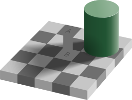

Adelson's Illusion

This illusion involves a checkerboard pattern where two squares, A and B, appear to be different shades of gray but are actually the same. The illusion powerfully demonstrates lightness constancy: our brain accounts for shadows and lighting when interpreting color and brightness. Square B is surrounded by a shadow, leading the brain to adjust its perception to assume it’s lighter than it physically is. This shows how our visual system automatically compensates for lighting conditions, sometimes leading to errors in judgment.
